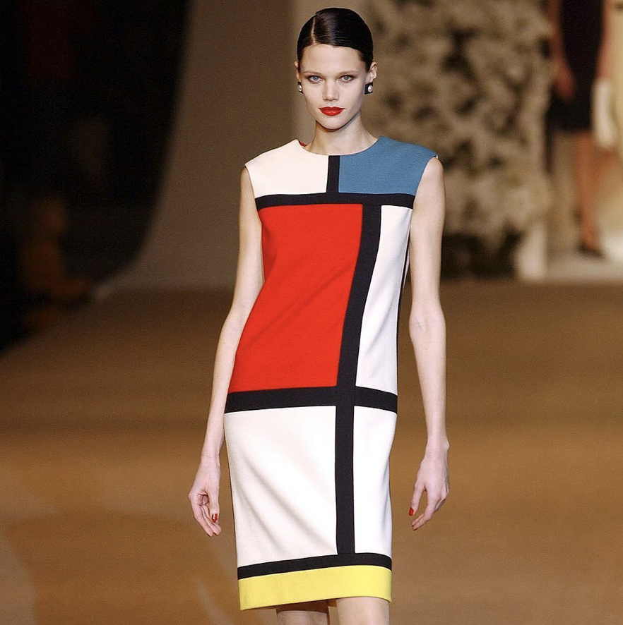
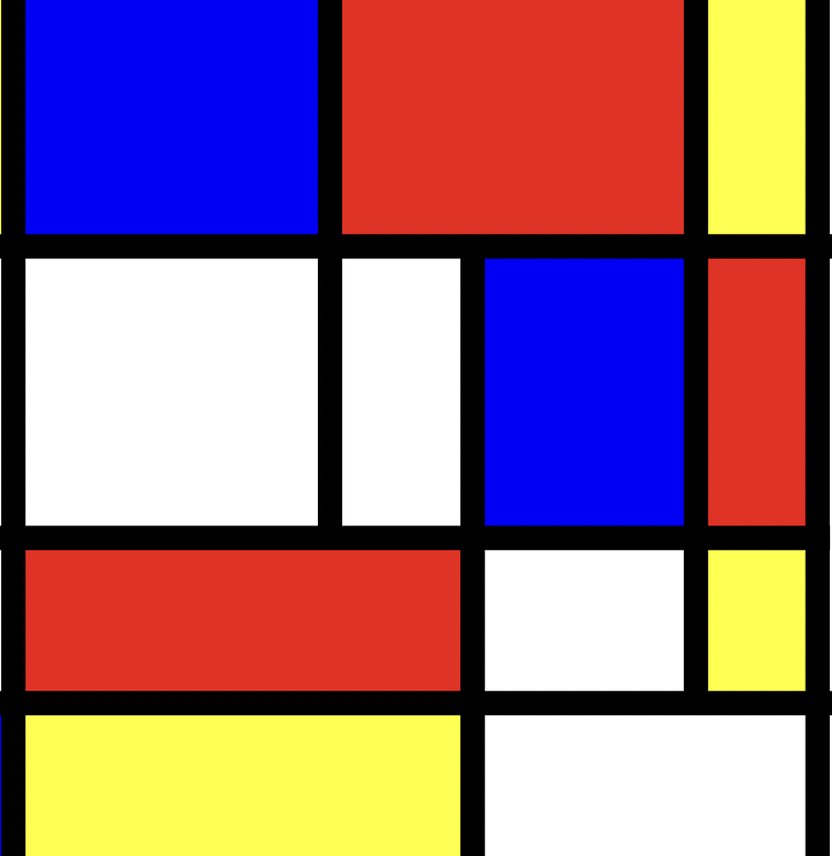
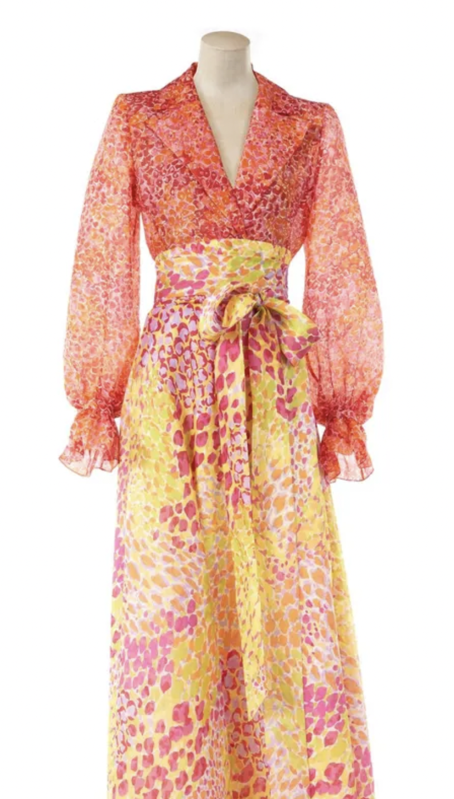
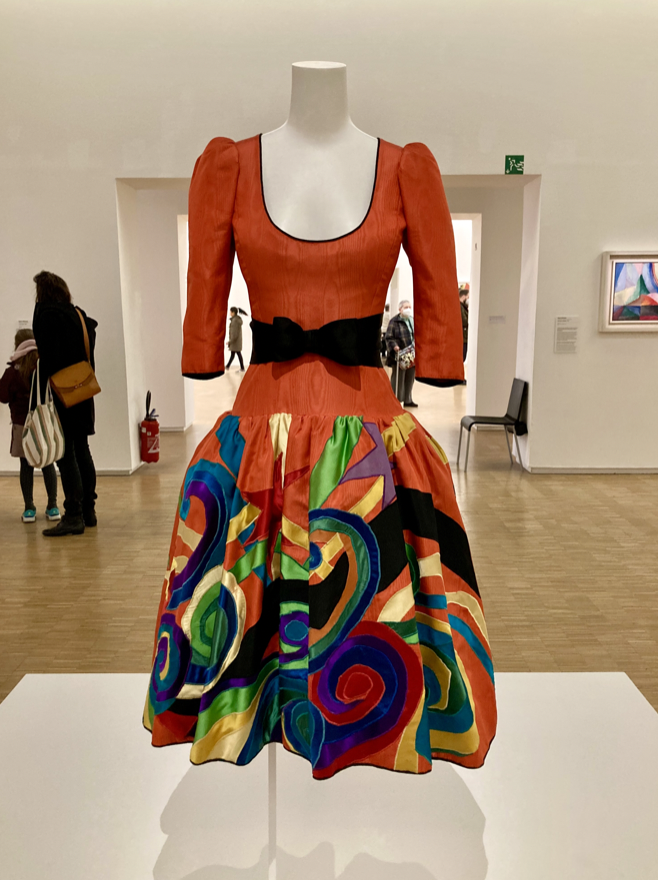
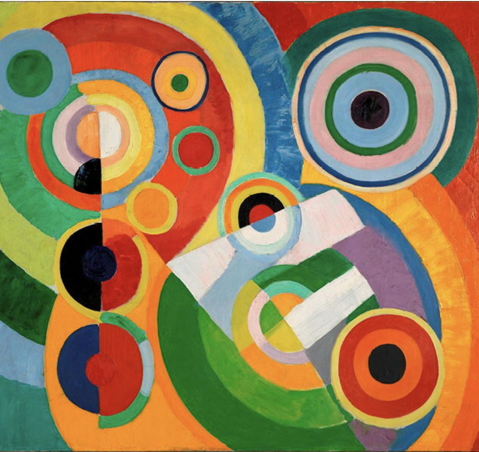

Quand l'art inspire la haute couture

Une robe
La robe "Hommage à Piet Mondrian" Jersey de laine écru, incrusté noir, rouge, jaune et bleu, Automne-hiver 1965

Un tableau
Piet Mondrian, composition en Rouge, Jaune, Bleu et Noir, 1921, huile sur toile

Une robe
Blouse et jupe d'organza satiné, Musée Yves Saint Laurent Paris

Un tableau
Pierre Bonnard, Le jardin, vers 1937Paris, musée d'Art Moderne

Une robe
Yves Saint-Laurent crée cette robe en repensant au costume créé par Picasso pour les Ballets Russes de Diaghilev en 1917

Un tableau
Sonai Delaunay, Automne